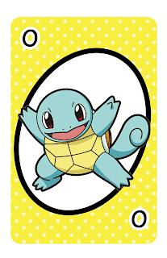
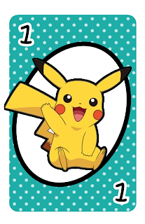

El juego consiste en encontrar el par de la carta , se volteara la carta una vez que pienses ,y encuentres el par de la carta se , en la parte de abajo te muestra el tiempo cuantas cartas encontraste y durante todo el juego cuantos intentos tuviste , marcandote cuanto tiempo te demoraste en poder resolver el juego

Una vez que haigas encontrado todas las cartas te apararecera GANASTE..!!
pero debes de encontrar todas la cartas sino no podras ganar el juego